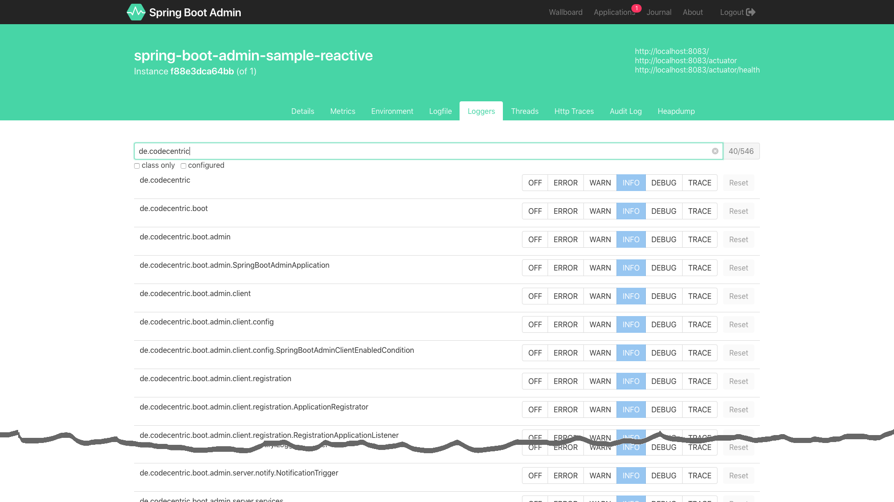

<!DOCTYPE HTML>
<html lang="zh-CN">
<head><meta name="generator" content="Hexo 3.8.0">
    <!--Setting-->
    <meta charset="UTF-8">
    <meta name="viewport" content="width=device-width, user-scalable=no, initial-scale=1.0, maximum-scale=1.0, minimum-scale=1.0">
    <meta http-equiv="X-UA-Compatible" content="IE=Edge,chrome=1">
    <meta http-equiv="Cache-Control" content="no-siteapp">
    <meta http-equiv="Cache-Control" content="no-transform">
    <meta http-equiv="pragma" content="no-cache">
    <meta http-equiv="Cache-Control" content="no-cache, must-revalidate">
    <meta http-equiv="expires" content="Mon Apr 06 2020 02:12:38 GMT+0800 (CST)">
    <meta name="renderer" content="webkit|ie-comp|ie-stand">
    <meta name="apple-mobile-web-app-capable" content="张万众的博客 - 关注Spring Cloud、Docker">
    <meta name="apple-mobile-web-app-status-bar-style" content="black">
    <meta name="format-detection" content="telephone=no,email=no,adress=no">
    <meta name="browsermode" content="application">
    <meta name="screen-orientation" content="portrait">
    <meta name="theme-version" content="1.2.3">
    <meta name="root" content="/">
    
    <!--SEO-->

    <meta name="keywords" content="日志,Spring Boot">


    <meta name="description" content="
本文基于：Spring Boot 2.1.3，理论支持Spring Boot 2.x所有版本。

作为程序猿，定位问题是我们的日常工作，而日志是我们定位问题非常重要的依据。传统方式定位问题时，往往是如下步骤：

将日志级别设低，例如 DEBUG ；
重启应用；
复现问题，观察日志；

如果能...">


<meta name="robots" content="all">
<meta name="google" content="all">
<meta name="googlebot" content="all">
<meta name="verify" content="all">
    <!--Title-->


<title>Spring Boot 2动态修改日志级别 | 张万众的博客 - 关注Spring Cloud、Docker</title>


    <link rel="alternate" href="../../atom.html" title="张万众的博客 - 关注Spring Cloud、Docker" type="application/atom+xml">


    

    


<link rel="stylesheet" href="../../static/css/bootstrap.min-271a649e0635d6fa1b.css">
<link rel="stylesheet" href="../../static/css/font-awesome.min-ac2bebcf7fb5b26.css">
<link rel="stylesheet" href="../../static/css/style-6f3c140f6eee20e6591da00ec0.css">


    


    <script>
        var _hmt = _hmt || [];
        (function() {
            var hm = document.createElement("script");
            hm.src = "https://hm.baidu.com/hm.js?13766878cde148282622871dd245a973";
            var s = document.getElementsByTagName("script")[0];
            s.parentNode.insertBefore(hm, s);
        })();
    </script>


    

</head>

</html>
<!--[if lte IE 8]>
<style>
    html{ font-size: 1em }
</style>
<![endif]-->
<!--[if lte IE 9]>
<div style="ie">你使用的浏览器版本过低，为了你更好的阅读体验，请更新浏览器的版本或者使用其他现代浏览器，比如Chrome、Firefox、Safari等。</div>
<![endif]-->

<body>
    
    <nav class="main-navigation">
    <div class="container">
        <div class="row clearfix">
            <div class="col-md-12 column">
                <nav class="navbar navbar-default" style="background-color:#fff;border:0;margin-bottom:0" role="navigation">
                    <div class="navbar-header">
                        <button type="button" class="navbar-toggle" data-toggle="collapse" data-target="#navbar-collapse-1">
                            <span class="sr-only">切</span>
                            <span class="icon-bar"></span>
                            <span class="icon-bar"></span>
                            <span class="icon-bar"></span>
                        </button>
                        <a class="logo" href="../../index.html">
                            张万众的博客
                        </a>
                    </div>

                    <div class="collapse navbar-collapse" style="border:0;" id="navbar-collapse-1">
                        <ul class="nav navbar-nav">
                            
                                
                                    <li>
                                        <a href="../../about.html" target="_blank">
                                            <i class="fa fa-user"></i>
                                            关于我
                                        </a>
                                    </li>
                                
                            
                                
                                    <li>
                                        <a href="../../archives.html" target="_blank">
                                            <i class="fa fa-archive"></i>
                                            归档
                                        </a>
                                    </li>
                                
                            
                                
                                    <li class="dropdown">
                                        <a href="#" class="dropdown-toggle" data-toggle="dropdown" data-hover="dropdown">
                                            <i class="fa fa-fire"></i>
                                            系列课程
                                            <strong class="caret"></strong>
                                        </a>
                                        <ul class="dropdown-menu">
                                            
                                                <li>
                                                    <a href="../../docker/00-docker-lession-index.html" target="_blank">
                                                        <i class="fa "></i>
                                                        Docker系列教程
                                                    </a>
                                                </li>
                                            
                                                <li>
                                                    <a href="../../spring-cloud/spring-cloud-index.html" target="_blank">
                                                        <i class="fa "></i>
                                                        Spring Cloud系列教程
                                                    </a>
                                                </li>
                                            
                                                <li>
                                                    <a href="../spring-boot-index.html" target="_blank">
                                                        <i class="fa "></i>
                                                        Spring Boot系列教程
                                                    </a>
                                                </li>
                                            
                                        </ul>
                                    </li>
                                
                            
                                
                                    <li class="dropdown">
                                        <a href="#" class="dropdown-toggle" data-toggle="dropdown" data-hover="dropdown">
                                            <i class="fa fa-book"></i>
                                            开源书
                                            <strong class="caret"></strong>
                                        </a>
                                        <ul class="dropdown-menu">
                                            
                                                <li>
                                                    <a href="../../books/rocketmq.html" target="_blank">
                                                        <i class="fa fa-rocket"></i>
                                                        RocketMQ开发者指南
                                                    </a>
                                                </li>
                                            
                                                <li>
                                                    <a href="../../books/skywalking.html" target="_blank">
                                                        <i class="fa fa-skyatlas"></i>
                                                        Skywalking 6.2.0中文文档
                                                    </a>
                                                </li>
                                            
                                        </ul>
                                    </li>
                                
                            
                                
                                    <li class="dropdown">
                                        <a href="#" class="dropdown-toggle" data-toggle="dropdown" data-hover="dropdown">
                                            <i class="fa fa-cog"></i>
                                            工具
                                            <strong class="caret"></strong>
                                        </a>
                                        <ul class="dropdown-menu">
                                            
                                                <li>
                                                    <a href="../../tools/markdown2.html" target="_blank">
                                                        <i class="fa "></i>
                                                        微信排版工具2.0
                                                    </a>
                                                </li>
                                            
                                        </ul>
                                    </li>
                                
                            
                        </ul>
                        
                            <form id="search-form" class="navbar-form navbar-right">
                                <div class="form-group input-group">
                                    <input type="text" id="local-search-input" class="form-control" placeholder="搜我...">
                                    <span class="input-group-btn">
                                        <a class="btn btn-default">
                                            <i class="fa fa-search"></i>
                                        </a>
                                    </span>
                                </div>
                                <div id="local-search-result" class="local-search-result-cls"></div>
                            </form>
                        
                    </div>
                </nav>
            </div>
        </div>
    </div>
</nav>

    <a href="javascript:;" target="_blank">
        
    </a>


    <section class="content-wrap">
        <div class="container">
            <div class="row">
                <main class="col-md-8 main-content m-post">
                    

<p id="process"></p>
<article class="post">
    <div class="post-head">
        <h1 id="Spring Boot 2动态修改日志级别">
            
                Spring Boot 2动态修改日志级别
            
        </h1>
        <div class="post-meta">
    
        <span class="categories-meta fa-wrap">
            <i class="fa fa-folder-open-o"></i>
            <a class="category-link" href="javascript:;">Spring Boot</a>
        </span>
    

    
        <span class="fa-wrap">
            <i class="fa fa-tags"></i>
            <span class="tags-meta">
                
                    <a class="tag-link" href="javascript:;">Spring Boot</a> <a class="tag-link" href="../../tags/日志/index.html">日志</a>
                
            </span>
        </span>
    

    
        
        <span class="fa-wrap">
            <i class="fa fa-clock-o"></i>
            <span class="date-meta">2019/03/29</span>
        </span>
        
            <span class="fa-wrap">
                <i class="fa fa-eye"></i>
                <span id="busuanzi_value_page_pv"></span>
            </span>
        
    
</div>
        
        
    </div>
    
    <div class="post-body post-content" id="post-content">
        
    <div class="toc-article">
        <strong>
            目录
        </strong>
        <div class="toc-content">
            <ol class="toc"><li class="toc-item toc-level-2"><a class="toc-link" href="#编码"><span class="toc-text">编码</span></a></li><li class="toc-item toc-level-2"><a class="toc-link" href="#测试"><span class="toc-text">测试</span></a><ol class="toc-child"><li class="toc-item toc-level-3"><a class="toc-link" href="#测试1：查看当前应用各包-类的日志级别"><span class="toc-text">测试1：查看当前应用各包/类的日志级别</span></a></li><li class="toc-item toc-level-3"><a class="toc-link" href="#测试2：查看指定包-类日志详情"><span class="toc-text">测试2：查看指定包/类日志详情</span></a></li><li class="toc-item toc-level-3"><a class="toc-link" href="#测试3：修改日志级别"><span class="toc-text">测试3：修改日志级别</span></a></li></ol></li><li class="toc-item toc-level-2"><a class="toc-link" href="#原理分析"><span class="toc-text">原理分析</span></a></li><li class="toc-item toc-level-2"><a class="toc-link" href="#你可能会好奇"><span class="toc-text">你可能会好奇</span></a></li><li class="toc-item toc-level-2"><a class="toc-link" href="#界面"><span class="toc-text">界面</span></a></li><li class="toc-item toc-level-2"><a class="toc-link" href="#配套代码"><span class="toc-text">配套代码</span></a></li></ol>
        </div>
    </div>


        <blockquote>
<p>本文基于：Spring Boot 2.1.3，理论支持Spring Boot 2.x所有版本。</p>
</blockquote>
<p>作为程序猿，定位问题是我们的日常工作，而日志是我们定位问题非常重要的依据。传统方式定位问题时，往往是如下步骤：</p>
<ul>
<li>将日志级别设低，例如 <code>DEBUG</code> ；</li>
<li>重启应用；</li>
<li>复现问题，观察日志；</li>
</ul>
<p>如果能动态修改日志级别（无需重启应用，就能立刻刷新），那绝对 <code>如猫添翼</code> 。事实上，从 <code>Spring Boot 1.5</code> 开始，<code>Spring Boot Actuator</code> 组件就已提供动态修改日志级别的能力。</p>
<blockquote>
<p><strong>TIPS</strong></p>
<ul>
<li>其实更低版本也只需简单扩展，即可实现动态修改日志级别。</li>
<li>对Spring Boot Actuator感到陌生的童鞋，可先前往 <a href="../../spring-cloud/finchley-3/index.html">Spring Boot Actuator</a> 了解基础用法。</li>
</ul>
</blockquote>
<p>废话不多说了，亮代码吧。</p>
<h2 id="编码"><a href="#编码" class="headerlink" title="编码"></a>编码</h2><ul>
<li><p>加依赖</p>
<figure class="highlight xml"><table><tr><td class="gutter"><pre><span class="line">1</span><br><span class="line">2</span><br><span class="line">3</span><br><span class="line">4</span><br><span class="line">5</span><br><span class="line">6</span><br><span class="line">7</span><br><span class="line">8</span><br></pre></td><td class="code"><pre><span class="line"><span class="tag">&lt;<span class="name">dependency</span>&gt;</span></span><br><span class="line">    <span class="tag">&lt;<span class="name">groupId</span>&gt;</span>org.springframework.boot<span class="tag">&lt;/<span class="name">groupId</span>&gt;</span></span><br><span class="line">    <span class="tag">&lt;<span class="name">artifactId</span>&gt;</span>spring-boot-starter-web<span class="tag">&lt;/<span class="name">artifactId</span>&gt;</span></span><br><span class="line"><span class="tag">&lt;/<span class="name">dependency</span>&gt;</span></span><br><span class="line"><span class="tag">&lt;<span class="name">dependency</span>&gt;</span></span><br><span class="line">    <span class="tag">&lt;<span class="name">groupId</span>&gt;</span>org.springframework.boot<span class="tag">&lt;/<span class="name">groupId</span>&gt;</span></span><br><span class="line">    <span class="tag">&lt;<span class="name">artifactId</span>&gt;</span>spring-boot-starter-actuator<span class="tag">&lt;/<span class="name">artifactId</span>&gt;</span></span><br><span class="line"><span class="tag">&lt;/<span class="name">dependency</span>&gt;</span></span><br></pre></td></tr></table></figure>
<p>这里的 <code>spring-boot-starter-web</code> 不是必须的，只是下面测试代码要用到。</p>
</li>
<li><p>写代码</p>
<figure class="highlight java"><table><tr><td class="gutter"><pre><span class="line">1</span><br><span class="line">2</span><br><span class="line">3</span><br><span class="line">4</span><br><span class="line">5</span><br><span class="line">6</span><br><span class="line">7</span><br><span class="line">8</span><br><span class="line">9</span><br><span class="line">10</span><br><span class="line">11</span><br><span class="line">12</span><br><span class="line">13</span><br><span class="line">14</span><br><span class="line">15</span><br><span class="line">16</span><br><span class="line">17</span><br><span class="line">18</span><br><span class="line">19</span><br><span class="line">20</span><br><span class="line">21</span><br></pre></td><td class="code"><pre><span class="line"><span class="keyword">package</span> com.itmuch.logging;</span><br><span class="line"></span><br><span class="line"><span class="keyword">import</span> org.slf4j.Logger;</span><br><span class="line"><span class="keyword">import</span> org.slf4j.LoggerFactory;</span><br><span class="line"><span class="keyword">import</span> org.springframework.web.bind.annotation.GetMapping;</span><br><span class="line"><span class="keyword">import</span> org.springframework.web.bind.annotation.RestController;</span><br><span class="line"></span><br><span class="line"></span><br><span class="line"><span class="comment">/**</span></span><br><span class="line"><span class="comment"> * <span class="doctag">@author</span> itmuch.com</span></span><br><span class="line"><span class="comment"> */</span></span><br><span class="line"><span class="meta">@RestController</span></span><br><span class="line"><span class="keyword">public</span> <span class="class"><span class="keyword">class</span> <span class="title">TestController</span> </span>&#123;</span><br><span class="line">    <span class="keyword">private</span> <span class="keyword">static</span> <span class="keyword">final</span> Logger LOGGER = LoggerFactory.getLogger(TestController.class);</span><br><span class="line"></span><br><span class="line">    <span class="meta">@GetMapping</span>(<span class="string">"/test"</span>)</span><br><span class="line">    <span class="function"><span class="keyword">public</span> String <span class="title">simple</span><span class="params">()</span> </span>&#123;</span><br><span class="line">        LOGGER.debug(<span class="string">"这是一个debug日志..."</span>);</span><br><span class="line">        <span class="keyword">return</span> <span class="string">"test"</span>;</span><br><span class="line">    &#125;</span><br><span class="line">&#125;</span><br></pre></td></tr></table></figure>
</li>
<li><p>写配置：</p>
<figure class="highlight yaml"><table><tr><td class="gutter"><pre><span class="line">1</span><br><span class="line">2</span><br><span class="line">3</span><br><span class="line">4</span><br><span class="line">5</span><br></pre></td><td class="code"><pre><span class="line"><span class="attr">management:</span></span><br><span class="line"><span class="attr">  endpoints:</span></span><br><span class="line"><span class="attr">    web:</span></span><br><span class="line"><span class="attr">      exposure:</span></span><br><span class="line"><span class="attr">        include:</span> <span class="string">'loggers'</span></span><br></pre></td></tr></table></figure>
<p>由于Spring Boot 2.x默认只暴露 <code>/health</code> 以及 <code>/info</code> 端点，而日志控制需要用到 <code>/loggers</code> 端点，故而需要设置将其暴露。</p>
</li>
</ul>
<p>代码编写完成啦。</p>
<h2 id="测试"><a href="#测试" class="headerlink" title="测试"></a>测试</h2><p><code>/loggers</code> 端点提供了 <code>查看</code> 以及 <code>修改</code> 日志级别的能力。</p>
<h3 id="测试1：查看当前应用各包-类的日志级别"><a href="#测试1：查看当前应用各包-类的日志级别" class="headerlink" title="测试1：查看当前应用各包/类的日志级别"></a>测试1：查看当前应用各包/类的日志级别</h3><p>访问 <code>http://localhost:8080/actuator/loggers</code> ，可看到类似如下的结果：</p>
<figure class="highlight json"><table><tr><td class="gutter"><pre><span class="line">1</span><br><span class="line">2</span><br><span class="line">3</span><br><span class="line">4</span><br><span class="line">5</span><br><span class="line">6</span><br><span class="line">7</span><br><span class="line">8</span><br><span class="line">9</span><br><span class="line">10</span><br><span class="line">11</span><br><span class="line">12</span><br><span class="line">13</span><br><span class="line">14</span><br></pre></td><td class="code"><pre><span class="line">&#123;</span><br><span class="line">	<span class="attr">"levels"</span>: [<span class="string">"OFF"</span>, <span class="string">"ERROR"</span>, <span class="string">"WARN"</span>, <span class="string">"INFO"</span>, <span class="string">"DEBUG"</span>, <span class="string">"TRACE"</span>],</span><br><span class="line">	<span class="attr">"loggers"</span>: &#123;</span><br><span class="line">		<span class="attr">"ROOT"</span>: &#123;</span><br><span class="line">			<span class="attr">"configuredLevel"</span>: <span class="string">"INFO"</span>,</span><br><span class="line">			<span class="attr">"effectiveLevel"</span>: <span class="string">"INFO"</span></span><br><span class="line">		&#125;,		</span><br><span class="line">		<span class="attr">"com.itmuch.logging.TestController"</span>: &#123;</span><br><span class="line">			<span class="attr">"configuredLevel"</span>: <span class="literal">null</span>,</span><br><span class="line">			<span class="attr">"effectiveLevel"</span>: <span class="string">"INFO"</span></span><br><span class="line">		&#125;</span><br><span class="line">	&#125;</span><br><span class="line">	// ...省略</span><br><span class="line">&#125;</span><br></pre></td></tr></table></figure>
<h3 id="测试2：查看指定包-类日志详情"><a href="#测试2：查看指定包-类日志详情" class="headerlink" title="测试2：查看指定包/类日志详情"></a>测试2：查看指定包/类日志详情</h3><p>访问 <code>http://localhost:8080/actuator/loggers/com.itmuch.logging.TestController</code> ，可看到类似如下的结果：</p>
<figure class="highlight json"><table><tr><td class="gutter"><pre><span class="line">1</span><br></pre></td><td class="code"><pre><span class="line">&#123;<span class="attr">"configuredLevel"</span>:<span class="literal">null</span>,<span class="attr">"effectiveLevel"</span>:<span class="string">"INFO"</span>&#125;</span><br></pre></td></tr></table></figure>
<p>由测试不难发现，想看哪个包/类的日志，只需构造 <code>/actuator/loggers/包名类名全路径</code> 去访问即可。</p>
<h3 id="测试3：修改日志级别"><a href="#测试3：修改日志级别" class="headerlink" title="测试3：修改日志级别"></a>测试3：修改日志级别</h3><p>在 <code>TestController</code> 类中，笔者编写设置了一条日志 <code>LOGGER.debug(&quot;这是一个debug日志...&quot;);</code> ，而由测试1，默认的日志级别是INFO，所以不会打印。下面来尝试将该类的日志级别设为DEBUG。</p>
<figure class="highlight shell"><table><tr><td class="gutter"><pre><span class="line">1</span><br><span class="line">2</span><br><span class="line">3</span><br></pre></td><td class="code"><pre><span class="line">curl -X POST http://localhost:8080/actuator/loggers/com.itmuch.logging.TestController \</span><br><span class="line">-H "Content-Type: application/vnd.spring-boot.actuator.v2+json;charset=UTF-8" \</span><br><span class="line">--data '&#123;"configuredLevel":"debug"&#125;'</span><br></pre></td></tr></table></figure>
<p>如上，只需发送一个POST请求，并将请求body设为：<code>{&quot;configuredLevel&quot;:&quot;debug&quot;}</code> 即可。</p>
<p>此时，访问 <code>localhost:8080/test</code> 会看到类似如下的日志：</p>
<figure class="highlight plain"><table><tr><td class="gutter"><pre><span class="line">1</span><br></pre></td><td class="code"><pre><span class="line">2019-03-28 16:24:04.513 DEBUG 19635 --- [nio-8080-exec-7] com.itmuch.logging.TestController        : 这是一个debug日志...</span><br></pre></td></tr></table></figure>
<p>并且，此时再访问 <code>http://localhost:8080/actuator/loggers/com.itmuch.logging.TestController</code> ，可看到类似如下的结果：</p>
<figure class="highlight json"><table><tr><td class="gutter"><pre><span class="line">1</span><br></pre></td><td class="code"><pre><span class="line">&#123;<span class="attr">"configuredLevel"</span>:<span class="string">"DEBUG"</span>,<span class="attr">"effectiveLevel"</span>:<span class="string">"DEBUG"</span>&#125;</span><br></pre></td></tr></table></figure>
<p>说明已成功动态修改日志级别。</p>
<h2 id="原理分析"><a href="#原理分析" class="headerlink" title="原理分析"></a>原理分析</h2><blockquote>
<p><strong>TIPS</strong></p>
<p>本节着重分析如何实现动态修改。</p>
</blockquote>
<p><strong>Actuator有约定， <code>/actuator/xxx</code> 端点的定义代码在 <code>xxxEndpoint</code> 中</strong>。故而，找到类 <code>org.springframework.boot.actuate.logging.LoggersEndpoint</code> ，可看到类似如下的代码：</p>
<figure class="highlight java"><table><tr><td class="gutter"><pre><span class="line">1</span><br><span class="line">2</span><br><span class="line">3</span><br><span class="line">4</span><br><span class="line">5</span><br><span class="line">6</span><br><span class="line">7</span><br><span class="line">8</span><br><span class="line">9</span><br><span class="line">10</span><br><span class="line">11</span><br><span class="line">12</span><br></pre></td><td class="code"><pre><span class="line"><span class="meta">@Endpoint</span>(id = <span class="string">"loggers"</span>)</span><br><span class="line"><span class="keyword">public</span> <span class="class"><span class="keyword">class</span> <span class="title">LoggersEndpoint</span> </span>&#123;</span><br><span class="line">	<span class="keyword">private</span> <span class="keyword">final</span> LoggingSystem loggingSystem;</span><br><span class="line"></span><br><span class="line">	<span class="meta">@WriteOperation</span></span><br><span class="line">	<span class="function"><span class="keyword">public</span> <span class="keyword">void</span> <span class="title">configureLogLevel</span><span class="params">(@Selector String name,</span></span></span><br><span class="line"><span class="function"><span class="params">			@Nullable LogLevel configuredLevel)</span> </span>&#123;</span><br><span class="line">		Assert.notNull(name, <span class="string">"Name must not be empty"</span>);</span><br><span class="line">		<span class="keyword">this</span>.loggingSystem.setLogLevel(name, configuredLevel);</span><br><span class="line">	&#125;</span><br><span class="line">	<span class="comment">// ...其他省略</span></span><br><span class="line">&#125;</span><br></pre></td></tr></table></figure>
<p>其中， <code>Endpoint</code> 、<code>WriteOperation</code> 、<code>@Selector</code> 都是Spring Boot 2.0开始提供的新注解。</p>
<p><code>@Endpoint(id = &quot;loggers&quot;)</code> 用来描述<code>Spring Boot Actuator</code> 的端点，这样就会产生一个<code>/actuator/loggers</code> 的路径，它类似于Spring MVC的 <code>@RequestMapping(&quot;loggers&quot;)</code> 。</p>
<p><code>@WriteOperation</code> 表示这是一个写操作，它类似于Spring MVC的 <code>@PostMapping</code> 。Spring Boot Actuator还提供了其他操作，如下表：</p>
<table>
<thead>
<tr>
<th>Operation</th>
<th>HTTP method</th>
</tr>
</thead>
<tbody>
<tr>
<td><code>@ReadOperation</code></td>
<td><code>GET</code></td>
</tr>
<tr>
<td><code>@WriteOperation</code></td>
<td><code>POST</code></td>
</tr>
<tr>
<td><code>@DeleteOperation</code></td>
<td><code>DELETE</code></td>
</tr>
</tbody>
</table>
<p><code>@Selector</code> 用于筛选 <code>@Endpoint</code> 注解返回值的子集，它类似于Spring MVC的 <code>@PathVariable</code> 。</p>
<p>这样，上面的代码就很好理解了—— <code>configureLogLevel</code> 方法里面就一行代码 ：<code>this.loggingSystem.setLogLevel(name, configuredLevel);</code> ，发送POST请求后，name就是我们传的包名或者类名，configuredLevel就是我们传的消息体。</p>
<p>怎么实现动态修改的呢？不妨点进去看看，然后发现代码如下：</p>
<figure class="highlight java"><table><tr><td class="gutter"><pre><span class="line">1</span><br><span class="line">2</span><br><span class="line">3</span><br><span class="line">4</span><br></pre></td><td class="code"><pre><span class="line"><span class="comment">// org.springframework.boot.logging.LoggingSystem#setLogLevel</span></span><br><span class="line"><span class="function"><span class="keyword">public</span> <span class="keyword">void</span> <span class="title">setLogLevel</span><span class="params">(String loggerName, LogLevel level)</span> </span>&#123;</span><br><span class="line">    <span class="keyword">throw</span> <span class="keyword">new</span> UnsupportedOperationException(<span class="string">"Unable to set log level"</span>);</span><br><span class="line">&#125;</span><br></pre></td></tr></table></figure>
<p>嘿嘿，没事，肯定有实现类， 该方法在如下实现类被实现：</p>
<figure class="highlight plain"><table><tr><td class="gutter"><pre><span class="line">1</span><br><span class="line">2</span><br><span class="line">3</span><br><span class="line">4</span><br><span class="line">5</span><br><span class="line">6</span><br><span class="line">7</span><br><span class="line">8</span><br></pre></td><td class="code"><pre><span class="line"># 适用于java.util.logging的LoggingSystem</span><br><span class="line">org.springframework.boot.logging.java.JavaLoggingSystem</span><br><span class="line"># 适用于Log4j 2的LoggingSystem</span><br><span class="line">org.springframework.boot.logging.log4j2.Log4J2LoggingSystem</span><br><span class="line"># 适用于logback的LoggingSystem</span><br><span class="line">org.springframework.boot.logging.logback.LogbackLoggingSystem</span><br><span class="line"># 啥都不干的LoggingSystem</span><br><span class="line">org.springframework.boot.logging.LoggingSystem.NoOpLoggingSystem</span><br></pre></td></tr></table></figure>
<p>Spring Boot 2.x中，默认使用Logback，因此进入到 <code>LogbackLoggingSystem</code> 中，代码如下：</p>
<figure class="highlight java"><table><tr><td class="gutter"><pre><span class="line">1</span><br><span class="line">2</span><br><span class="line">3</span><br><span class="line">4</span><br><span class="line">5</span><br><span class="line">6</span><br><span class="line">7</span><br></pre></td><td class="code"><pre><span class="line"><span class="meta">@Override</span></span><br><span class="line">	<span class="function"><span class="keyword">public</span> <span class="keyword">void</span> <span class="title">setLogLevel</span><span class="params">(String loggerName, LogLevel level)</span> </span>&#123;</span><br><span class="line">		ch.qos.logback.classic.Logger logger = getLogger(loggerName);</span><br><span class="line">		<span class="keyword">if</span> (logger != <span class="keyword">null</span>) &#123;</span><br><span class="line">			logger.setLevel(LEVELS.convertSystemToNative(level));</span><br><span class="line">		&#125;</span><br><span class="line">	&#125;</span><br></pre></td></tr></table></figure>
<p>至此，就真相大白了。其实根本没有黑科技，Spring Boot本质上还是使用了Logback的API，<code>ch.qos.logback.classic.Logger.setLevel</code> 实现日志级别的修改。</p>
<h2 id="你可能会好奇"><a href="#你可能会好奇" class="headerlink" title="你可能会好奇"></a>你可能会好奇</h2><p>你可能会好奇，LoggingSystem有这么多实现类，Spring Boot怎么知道什么情况下用什么LoggingSystem呢？可在 <code>org.springframework.boot.logging.LoggingSystem</code> 找到类似如下代码：</p>
<figure class="highlight java"><table><tr><td class="gutter"><pre><span class="line">1</span><br><span class="line">2</span><br><span class="line">3</span><br><span class="line">4</span><br><span class="line">5</span><br><span class="line">6</span><br><span class="line">7</span><br><span class="line">8</span><br><span class="line">9</span><br><span class="line">10</span><br><span class="line">11</span><br><span class="line">12</span><br><span class="line">13</span><br><span class="line">14</span><br><span class="line">15</span><br><span class="line">16</span><br><span class="line">17</span><br><span class="line">18</span><br><span class="line">19</span><br><span class="line">20</span><br><span class="line">21</span><br><span class="line">22</span><br><span class="line">23</span><br><span class="line">24</span><br><span class="line">25</span><br><span class="line">26</span><br><span class="line">27</span><br><span class="line">28</span><br><span class="line">29</span><br><span class="line">30</span><br><span class="line">31</span><br><span class="line">32</span><br><span class="line">33</span><br><span class="line">34</span><br><span class="line">35</span><br></pre></td><td class="code"><pre><span class="line"><span class="keyword">public</span> <span class="keyword">abstract</span> <span class="class"><span class="keyword">class</span> <span class="title">LoggingSystem</span> </span>&#123;</span><br><span class="line">	<span class="keyword">private</span> <span class="keyword">static</span> <span class="keyword">final</span> Map&lt;String, String&gt; SYSTEMS;</span><br><span class="line"></span><br><span class="line">	<span class="keyword">static</span> &#123;</span><br><span class="line">		Map&lt;String, String&gt; systems = <span class="keyword">new</span> LinkedHashMap&lt;&gt;();</span><br><span class="line">		systems.put(<span class="string">"ch.qos.logback.core.Appender"</span>,</span><br><span class="line">				<span class="string">"org.springframework.boot.logging.logback.LogbackLoggingSystem"</span>);</span><br><span class="line">		systems.put(<span class="string">"org.apache.logging.log4j.core.impl.Log4jContextFactory"</span>,</span><br><span class="line">				<span class="string">"org.springframework.boot.logging.log4j2.Log4J2LoggingSystem"</span>);</span><br><span class="line">		systems.put(<span class="string">"java.util.logging.LogManager"</span>,</span><br><span class="line">				<span class="string">"org.springframework.boot.logging.java.JavaLoggingSystem"</span>);</span><br><span class="line">		SYSTEMS = Collections.unmodifiableMap(systems);</span><br><span class="line">	&#125;</span><br><span class="line"></span><br><span class="line">	<span class="comment">/**</span></span><br><span class="line"><span class="comment">	 * Detect and return the logging system in use. Supports Logback and Java Logging.</span></span><br><span class="line"><span class="comment">	 * <span class="doctag">@param</span> classLoader the classloader</span></span><br><span class="line"><span class="comment">	 * <span class="doctag">@return</span> the logging system</span></span><br><span class="line"><span class="comment">	 */</span></span><br><span class="line">	<span class="function"><span class="keyword">public</span> <span class="keyword">static</span> LoggingSystem <span class="title">get</span><span class="params">(ClassLoader classLoader)</span> </span>&#123;</span><br><span class="line">		String loggingSystem = System.getProperty(SYSTEM_PROPERTY);</span><br><span class="line">		<span class="keyword">if</span> (StringUtils.hasLength(loggingSystem)) &#123;</span><br><span class="line">			<span class="keyword">if</span> (NONE.equals(loggingSystem)) &#123;</span><br><span class="line">				<span class="keyword">return</span> <span class="keyword">new</span> NoOpLoggingSystem();</span><br><span class="line">			&#125;</span><br><span class="line">			<span class="keyword">return</span> get(classLoader, loggingSystem);</span><br><span class="line">		&#125;</span><br><span class="line">		<span class="keyword">return</span> SYSTEMS.entrySet().stream()</span><br><span class="line">				.filter((entry) -&gt; ClassUtils.isPresent(entry.getKey(), classLoader))</span><br><span class="line">				.map((entry) -&gt; get(classLoader, entry.getValue())).findFirst()</span><br><span class="line">				.orElseThrow(() -&gt; <span class="keyword">new</span> IllegalStateException(</span><br><span class="line">						<span class="string">"No suitable logging system located"</span>));</span><br><span class="line">	&#125;</span><br><span class="line">  <span class="comment">// 省略不相关内容...</span></span><br><span class="line">&#125;</span><br></pre></td></tr></table></figure>
<p>由代码不难发现，其实就是构建了一个名为 <code>SYSTEMS</code> 的map，作为各种日志系统的字典；然后在 <code>get</code> 方法中，看应用是否加载了map中的类；如果加载了，就通过反射，初始化响应 <code>LoggingSystem</code> 。例如：Spring Boot发现当前应用加载了    <code>ch.qos.logback.core.Appender</code> ，就去实例化 <code>org.springframework.boot.logging.logback.LogbackLoggingSystem</code> 。</p>
<h2 id="界面"><a href="#界面" class="headerlink" title="界面"></a>界面</h2><p>本文是使用 <code>curl</code> 手动发送 <code>POST</code> 请求手动修改日志级别的，<strong>该方式不适用生产，因为很麻烦，容易出错</strong>。生产环境，建议根据Actuator提供的RESTful API定制界面，或使用 <code>Spring Boot Admin</code> ，可视化修改日志级别，如下图所示：</p>
<p></p>
<p>想修改哪个包/类的日志级别，直接点击即可。</p>
<h2 id="配套代码"><a href="#配套代码" class="headerlink" title="配套代码"></a>配套代码</h2><p>GitHub：<a href="javascript:;" target="_blank" rel="noopener">https://github.com/eacdy/spring-boot-study/tree/master/spring-boot-logging-change-logging-level</a></p>
<p>Gitee：<a href="javascript:;" target="_blank" rel="noopener">https://gitee.com/itmuch/spring-boot-study/tree/master/spring-boot-logging-change-logging-level</a></p>

        <h2>相关文章</h2><ul><li><a href="../../work-sum-log4j-to-logback/index.html">将应用的log4j换成logback</a></li><li><a href="../../work/simple-standard-log/index.html">最简日志打印规范</a></li><li><a href="../../dubbo/spring-boot-dubbo-mock/index.html">Spring Boot、Dubbo项目Mock测试踩坑与总结</a></li><li><a href="../../other/mybatis-optional-support/index.html">我最喜欢的Mybatis 3.5新特性——Optional支持</a></li><li><a href="../actuator-prometheus-grafana/index.html">Spring Boot 2.x监控数据可视化(Actuator + Prometheus + Grafana手把手)</a></li></ul>
    </div>
    
    <div class="post-footer">
        <div class="col-sm-10">
            <div>
                <b>本文链接</b>：<a href="" target="_blank">Spring Boot 2动态修改日志级别</a>
            </div>
            <div>
                
                    转载声明：本博客由张万众创作，采用 <a href="javascript:;" target="_blank"> CC BY 3.0 CN </a> 许可协议。可自由转载、引用，但需署名作者且注明文章出处。如转载至微信公众号，请在文末添加作者公众号二维码。
                
            </div>
            <div>
                
            </div>
        </div>
        <div class="col-sm-2">
            
        </div>
    </div>
</article>

<div class="article-nav prev-next-wrap clearfix">
    
        <a target="_blank" href="../../other/mybatis-optional-support/index.html" class="pre-post btn btn-default" title="我最喜欢的Mybatis 3.5新特性——Optional支持">
            <i class="fa fa-angle-left fa-fw"></i><span class="hidden-lg">上一篇</span>
            <span class="hidden-xs">我最喜欢的Mybatis 3.5新特性——Optional支持</span>
        </a>
    
    
        <a target="_blank" href="../../other/tucao/index.html" class="next-post btn btn-default" title="一点作为原创作者的心声……">
            <span class="hidden-lg">下一篇</span>
            <span class="hidden-xs">一点作为原创作者的心声……</span><i class="fa fa-angle-right fa-fw"></i>
        </a>
    
</div>


    <div id="comments">
        
   <p>评论系统未开启，无法评论！</p>

    </div>


                </main>
                
    <aside class="col-md-4 sidebar">
        
        <div class="widget about-me">
    <div class="row">
        <div class="col-md-5">
            
        </div>
        <div class="col-md-7">
            <a class="series-a" href="javascript:void(0)">公众号</a>
            <ul>
                <li>• 技术干货推送</li>
                <li>• 免费资料领取</li>
                <li><b>• 扫码领取更多惊喜</b></li>
            </ul>
        </div>
    </div>
    
        <div class="row">
            <div class="col-md-5">
                
            </div>
            <div class="col-md-7">
                <a class="series-a" href="javascript:void(0)">小程序</a>
                <ul>
                    <li>• 原创笔记</li>
                    <li>• 独家心法</li>
                    <li><b>• 扫码领取</b></li>
                </ul>
            </div>
        </div>
    
</div>


        
        
    <div class="ad">
        <div class="row">
            <div class="col-md-12">
                <a href="javascript:;" rel="nofollow" target="_blank">
                    
                </a>
            </div>
        </div>
    </div>


        
        <div class="widget">
    <div class="row">
        <div class="col-md-3">
            
        </div>
        <div class="col-md-9">
            <a class="series-a" target="_blank" href="../../spring-cloud/spring-cloud-index.html">Spring Cloud系列教程</a>
            <p>全面、通俗易懂的Spring Cloud教程</p>
        </div>
    </div>
    <div class="row">
        <div class="col-md-3">
            
        </div>
        <div class="col-md-9">
            <a class="series-a" target="_blank" href="javascript:;">Spring Cloud Alibaba视频教程</a>
            <p>全网唯一，你值得拥有</p>
        </div>
    </div>
    <div class="row">
        <div class="col-md-3">
            
        </div>
        <div class="col-md-9">
            <a class="series-a" target="_blank" href="../../docker/00-docker-lession-index.html">Docker系列教程</a>
            <p>Docker系列</p>
        </div>
    </div>
    <div class="row">
        <div class="col-md-3">
            
        </div>
        <div class="col-md-9">
            <a class="series-a" target="_blank" href="../spring-boot-index.html">Spring Boot系列教程</a>
            <p>Boot是基石...</p>
        </div>
    </div>
</div>


        
        
    <div class="widget">
        <h3 class="title">分类</h3>
        <ul class="category-list"><li class="category-list-item"><a class="category-list-link" href="javascript:;"><i class="fa" aria-hidden="true">Docker</i></a><span class="category-list-count">31</span></li><li class="category-list-item"><a class="category-list-link" href="javascript:;"><i class="fa" aria-hidden="true">Kubernetes</i></a><span class="category-list-count">2</span></li><li class="category-list-item"><a class="category-list-link current" href="javascript:;"><i class="fa" aria-hidden="true">Spring Boot</i></a><span class="category-list-count">6</span></li><li class="category-list-item"><a class="category-list-link" href="javascript:;"><i class="fa" aria-hidden="true">Spring Cloud</i></a><span class="category-list-count">94</span></li><li class="category-list-item"><a class="category-list-link" href="javascript:;"><i class="fa" aria-hidden="true">Spring Cloud Alibaba</i></a><span class="category-list-count">16</span></li><li class="category-list-item"><a class="category-list-link" href="javascript:;"><i class="fa" aria-hidden="true">Spring Cloud Stream</i></a><span class="category-list-count">1</span></li><li class="category-list-item"><a class="category-list-link" href="../../categories/其他/index.html"><i class="fa" aria-hidden="true">其他</i></a><span class="category-list-count">13</span></li><li class="category-list-item"><a class="category-list-link" href="../../categories/安装教程/index.html"><i class="fa" aria-hidden="true">安装教程</i></a><span class="category-list-count">7</span></li><li class="category-list-item"><a class="category-list-link" href="../../categories/工作/index.html"><i class="fa" aria-hidden="true">工作</i></a><span class="category-list-count">20</span></li></ul>
    </div>


        
        
        
        

        
    </aside>

            </div>
        </div>
    </section>
    <footer class="main-footer">
    <div class="container">
        <div class="row">
        </div>
    </div>
</footer>

<a id="back-to-top" class="icon-btn hide">
	<i class="fa fa-chevron-up"></i>
</a>


    <div class="copyright">
    <div class="container">
        <div class="row">
            <div class="col-sm-12">
                <div class="busuanzi">
    
        访问量:
        <strong id="busuanzi_value_site_pv">
            <i class="fa fa-spinner fa-spin"></i>
        </strong>
        &nbsp; | &nbsp;
        访客数:
        <strong id="busuanzi_value_site_uv">
            <i class="fa fa-spinner fa-spin"></i>
        </strong>
        &nbsp; <strong>Since 2018-12-26</strong>
    
</div>

            </div>
            <div class="col-sm-12">
                <span>Copyright &copy; 2017
                </span> |
                <span>
                    Powered by <a href="javascript:;" class="copyright-links" target="_blank" rel="nofollow">Hexo</a>
                </span> |
                <span>
                    Theme by <a href="javascript:;" class="copyright-links" target="_blank" rel="nofollow">ITMuch</a>
                </span>
            </div>
        </div>
    </div>
</div>

<script src="../../static/js/jquery.min.js"></script>
<script src="../../static/js/bootstrap.min.js"></script>
<script src="../../static/js/bootstrap-hover-dropdown.min.js"></script>

    <script src="../../static/js/search-3f4fbd0557c869ca0516ebb5f.js"></script>


    <script async="" src="../../static/js/busuanzi.pure.mini.js"></script>


<script src="../../static/js/app-da10bb3b2ae5c8348d2bd2cc3faf.js"></script>


</body>
